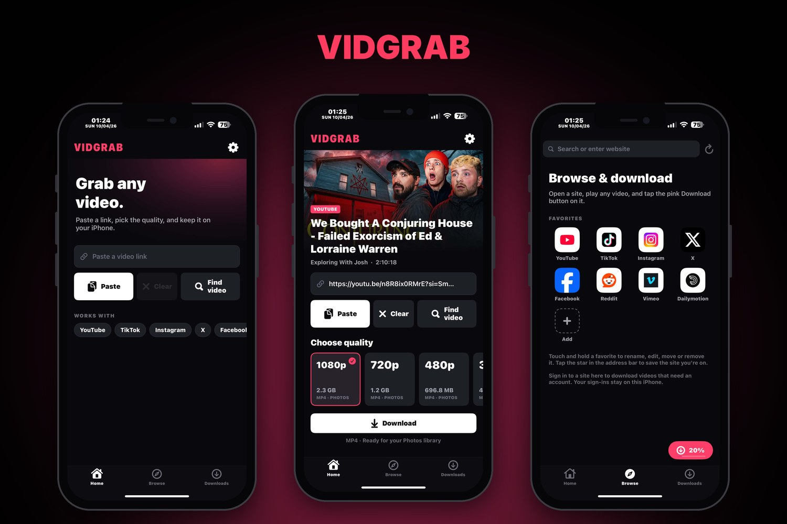
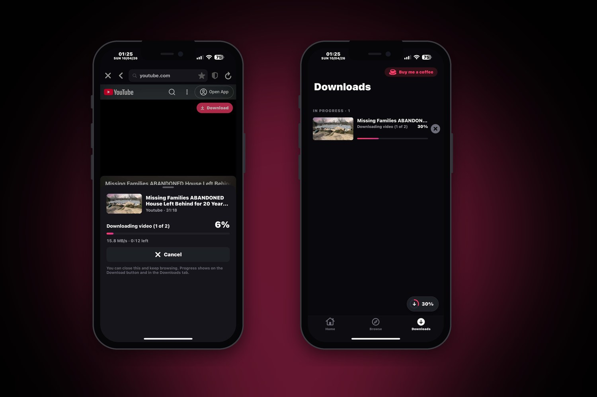
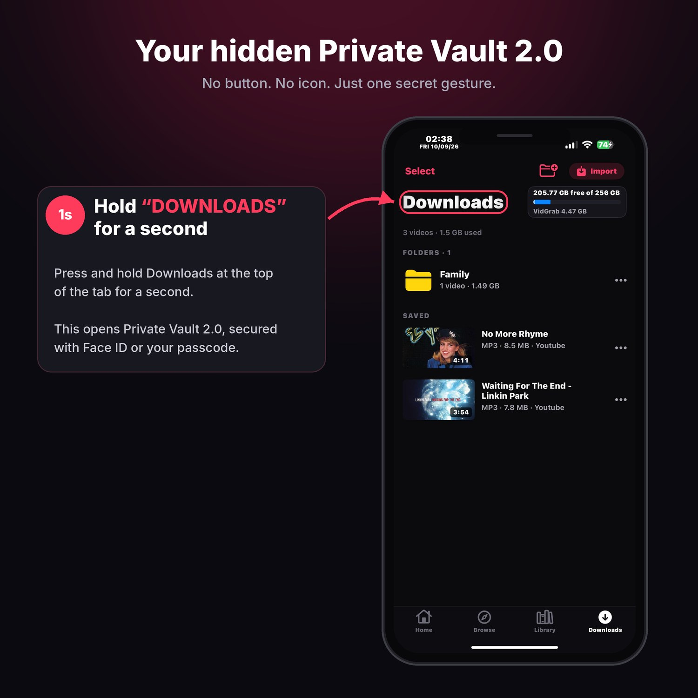

VidGrab



VidGrab lets you save videos on your iPhone. Copy a link in any app and it's ready when you open VidGrab, or browse to a video and tap Download.
Downloading
- Copy a video link in any app, open VidGrab and it's already on Home, ready to download
- Download whole playlists and channels at once, with one quality for all
- Works with YouTube and many other sites
- Choose the quality, up to 4K when the video has it
- Save sound only as MP3 or M4A
- YouTube videos keep their original audio language, not an auto-dubbed one
- Up to 10 downloads at the same time
- Fast downloads that fetch several parts of a video at once
- Downloads keep going when you leave the app, with a notification when they finish
- Progress shows in a bubble you can drag anywhere, with a count when more than one is running
Player
- Picture-in-picture, so you can keep watching in other apps
- Keeps playing with the screen off
- Playback speed (iOS 16 and newer)
- Picks up where you left off
- Choose Download or Stream on Home; the player has a download button
- Swipe to change brightness, volume and seek
- Optional auto English subtitles, made on your phone
Your videos
- Private Vault: hide videos behind a passcode, Face ID, or both
- Select several videos at once to save to Photos or Files, share, move to the vault, or delete
- Saved as MP4 so they play right away and can go into Photos
- Other formats, like TS, are converted to MP4 automatically
- Fix playback rebuilds a video that won't play properly
- Video info shows details about each file
- Library tab for videos and audio, with favorites, folders, search and sorting
- Pick tracks from playlists to download or stream
- Share > VidGrab from other apps
- Audio as MP3, M4A, WAV or FLAC with editable title, artist, album and cover art
- Pause and resume downloads
- Private Vault 2.0, hidden until you hold Downloads for 1.5 seconds
- Folders you can name and color to sort your downloads
- A storage card shows free space on your iPhone
Built-in browser
- Play any video and a Download button appears on it
- Ad blocker based on uBlock Origin Lite's lists
- Favorites with real site icons, which you can add, rename, edit and reorder
- Tap the star to save the site you're on
- Sign in to sites inside the app to download videos that need an account
Jailbreak extras
- The download bubble stays on screen over other apps and fades after 3 seconds so it won't get in the way
- Optional sound when your downloads finish
Settings
- Export your settings to a file and import them after reinstalling or on another phone
- Clear the cache, or clear it automatically every time the app opens
- Update the download engine when a site stops working
- Get notified when a new version of VidGrab is out
Everything VidGrab needs is built in, with no extra packages to install. Supports rootful, rootless and roothide.
What's new in 1.3.4
New Features
- Mini Player: Minimize the video player with the down arrow and keep playback going in a compact bar above the tab bar.
- Library Music Player: A frosted-glass player featuring album artwork, a progress bar, and playback controls. Swipe left on the cover to view lyrics.
- Audio Playlists: Create and manage your own playlists using downloaded songs.
- High-Quality Streaming: Choose your preferred streaming quality directly from Home or the browser, including 2K and 4K.
- Track List: View the full track list when streaming a playlist and jump straight to any song.
- Improved Playlist Playback: Shuffle now displays each track's original number. Shuffle, repeat, playback speed, and video on/off preferences are remembered between sessions.
- Default Download Settings: Set your preferred download quality and format in Settings > Downloads.
- Recently Saved: Swipe left or right through recently saved content on Home.
- Lock Screen Controls: Previous and next buttons and album artwork now appear on the Lock Screen during playlist streaming.
- Files Only Mode: Turn on "Files only (no Photos)" in Settings > Downloads to hide every Save to Photos option.
- Connections per Download: Choose 1 to 10 connections in Settings > Downloads. Lower it if a site blocks downloads.
Fixes & Improvements
- Fixed an issue where some 1080p downloads were saved at 360p.
- Fixed music playback stopping after a notification sound.
- Fixed disabled floating bubble options on some jailbroken devices.
- Fixed YouTube videos not loading in the browser on some iOS 15 devices.
New in 1.3.3
This update adds a new Library, playlist playback, better download controls, and several improvements across VidGrab.
Library
All your downloads are now available in one place. Sort your content, including by date added, and save playlists for later.
Playlists
Play playlists directly in VidGrab with next, previous, shuffle, and repeat controls. You can also save a playlist or download it for offline listening.
Turn off the video while a playlist continues playing using the VidGrab playback banner.
Downloads
Pause, resume, or cancel downloads instantly. You can also download an individual track while it's playing.
Share Sheet
Send links directly to VidGrab from other apps using Share → VidGrab.
Audio Tools
Edit audio information and search for cover artwork online.
Private Vault
Private Vault 2.0 is now available. Press and hold Downloads for 1.5 seconds to access it.
Interface
Updated the Home header and refined the overall interface for a cleaner look.
Fixes
Improved playlist transitions and fixed an issue where the keyboard could hide text while editing audio. Also fixed the Save card arrow and playlist selection indicators.
TrollStore (.tipa)
- Install VidGrab-1.3.3.tipa with TrollStore.
- To get the floating bubble over other apps, open VidGrab, go to Settings > Floating progress, and tap Install bubble helper.
- Choose TrollStore in the share menu and tap Install. This is a one-time step.
- Back in VidGrab, tap Test bubble to check that it works.
New in 1.3.2
- New Video Player: Swipe to adjust brightness, volume, and playback position. Also includes playback speed, screen size, rotation, subtitles, audio tracks, and Picture-in-Picture.
- Stream or Download: Start watching a video immediately, with a download option available directly in the player.
- Automatic English Subtitles: Generate English subtitles directly on your device. Disabled by default. Choose Balanced or Fast for lower device temperature; higher-quality processing may cause the device to become warm. Subtitles may not always be 100% accurate.
- Resumable Downloads: Downloads interrupted by closing or crashing VidGrab will automatically resume.
- Quality & CPU Temperature: The player now displays the current video quality and CPU temperature, and lets you select a quality for downloading.
- Download Folders: Organize downloads into custom folders with names and colors. A new storage card also shows available free space.
- Import Videos: Import videos directly from Photos or the Files app.
- Private Vault Improvements: Added a one-time notice when accessing the Private Vault. Passcode and Face ID protection can now be disabled individually.
- Copy Direct Link: A new Copy Link button is available next to Download.
- Browser Video Detection: VidGrab can now detect videos that only become available after playback starts in the built-in browser.
- Fixed “Unsupported URL” errors when downloading direct video links.
- Fixed videos that appeared as a black screen by converting them into standard MP4 files.
- Added a new Credits screen under Settings > About.
New in 1.3.1
- Fixed the download engine not starting on some jailbroken iOS 15 phones
- When the engine can't start, the error now shows the exact reason
New in 1.3.0
- Copy a video link anywhere, open VidGrab and it's ready on Home
- New Home screen showing your current download and latest videos
- Download whole playlists and channels in one go
- Player: picture-in-picture, keeps playing with the screen off, playback speed, and resumes where you left off
- Private Vault: hide videos behind a passcode, Face ID, or both
- Select several downloads at once to save to Photos or Files, share, move to the vault, or delete
- Downloads keep going when you leave the app, with a notification when they finish
- The download bubble can be dragged anywhere and snaps to the side
- Jailbreak only: the bubble stays on screen over other apps and fades after 3 seconds, plus an optional sound when downloads finish
- Back up your settings to a file and load them on another phone
Credits
- yt-dlp finds and downloads the videos
- FFmpeg and LAME join and convert files
- Auto subtitles use whisper.cpp and OpenAI Whisper (MIT)
- Python for iOS by BeeWare lets it all run on iPhone
- Ad blocker lists from uBlock Origin Lite and Peter Lowe
- Floating bubble method from TrollSpeed by Lessica
Free and open source, powered by yt-dlp. Source code · Report a problem